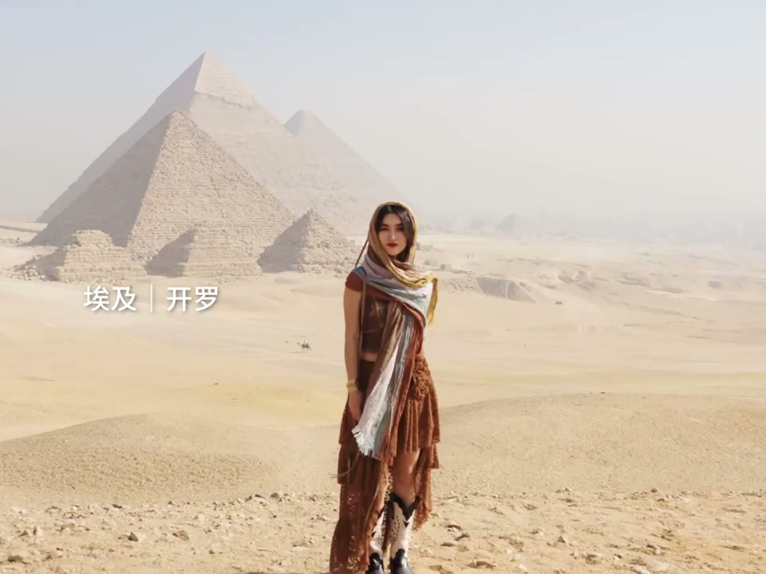

01
中文
响指转场之所以流行，是因为动作小、声音明确、视觉冲击力强。
EN
The snap transition works because the action is small, the sound is clear, and the visual focus is strong.
表达提示clear sound cue（明确的声音提示）

Scene English · 剪辑 · 响指转场
Let's Collect This Finger-Snap Transition
🎧 语音讲解
Why the Snap Works
情境响指转场流行是因为动作小、声音明确、视觉焦点集中——在响指声峰值点切镜，切换自然流畅。
响指转场之所以流行，是因为动作小、声音明确、视觉冲击力强。
The snap transition works because the action is small, the sound is clear, and the visual focus is strong.
表达提示clear sound cue（明确的声音提示）
在响指声的峰值点切镜，观众的注意力被声音引导。
Cut at the peak of the snap; the sound guides the audience's attention.
表达提示cut at the peak（峰值处切）
三个镜头中动作都集中在手上，焦点高度集中。
All attention is on the hand, keeping the focus tight.
表达提示focus on the hand（焦点在手上）
clear sound cue（明确的声音提示
cut at the peak（峰值处切

The Workflow
情境拍两个场景，两个场景都做打响指动作；剪辑时把剪辑点精确放在响指声的峰值。
拍两个场景，两个场景中都在做打响指的动作。
Shoot two scenes, snapping fingers in both.
表达提示two scenes（两个场景）
剪辑时把剪辑点精确放在响指声的峰值。
In editing, place the cut exactly at the peak of the snap.
表达提示exact cut point（精确剪辑点）
前一个镜头结束于响指，后一个镜头从响指开始。
The first scene ends on the snap; the next begins with it.
表达提示sound continuity（声音连续）
two scenes（两个场景
exact cut point（精确剪辑点

Consistency of the Move
情境两个场景的响指动作方向、速度、手的位置要尽量一致，否则会有跳跃感。
两个场景的响指动作方向、速度、手的位置要尽量一致。
Keep direction, speed, and hand position consistent across the two scenes.
表达提示consistent hand position（手位一致）
动作不一致会带来跳跃感。
Mismatched actions create a jumpy feel.
表达提示jumpy feel（跳跃感）
拍摄时可以在手上标记位置，确保两次一致。
Mark the hand position when shooting to keep the two snaps identical.
表达提示mark the position（标记位置）
jumpy feel（跳跃感
mark the position（标记位置

Aligning the Cut Precisely
情境放大音频波形，找到响指的峰值点作为切换点，必要时前后微调1-2帧。
放大音频波形，找到响指的峰值点作为切换点。
Zoom into the audio waveform to find the snap's peak as the cut point.
表达提示audio waveform（音频波形）
如果动作不够连贯，微调剪辑点前移或后移一两帧。
If the motion feels off, nudge the cut a frame or two.
表达提示nudge the cut（微调剪辑点）
响指时靠近麦克风，声音会更清晰。
Snap close to the microphone for a clearer sound.
表达提示close to the mic（靠近麦克风）
audio waveform（音频波形
nudge the cut（微调剪辑点

Variations and Boundaries
情境可以用拍手、跺脚等其他有声音的动作替代响指；响指转场比较显眼，不适合严肃内容。
可以用拍手、跺脚等其他有声音的动作替代响指。
You can swap the snap for claps or stomps—any sound-marked action.
表达提示sound-marked action（有声音的动作）
响指转场比较显眼，不适合需要低调转场的严肃内容。
The snap is showy—it doesn't fit serious, low-key content.
表达提示low-key content（低调内容）
从切就切了，转变为用声音触发转场，让观众的耳朵先感知变化。
Shift from cutting blindly to letting the sound trigger the change.
表达提示sound-triggered cut（声音触发切换）
low-key content（低调内容
说响指转场三要素
说操作流程
说一致性
说对齐剪辑点
说替代动作
手的位置要一致。
打响指靠近麦克风。
对准响指峰值。
两个场景都要做动作。
严肃内容慎用。